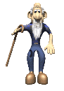

New Pages
|  | The old mans cassette |
| The tale of Finn Kreutzer |

|
The Pumpkin Man |

|
Uncanny Valley |

|
Honey, I'm Home |
The tale of Finn Kreutzer
The Tale of Finn Kreutzer
So here’s a creepy story I heard a while back. It’s about a kid
named Finn Kreutzer, who lived in Switzerland in the '90s. He was a
14-year-old boy from a farming family, and he was kind of an
outsider. He didn’t fit in much, but somehow he ended up hanging out
with a group of kids from his class. One day, they were just messing
around like usual, goofing off in a cornfield, playing
hide-and-seek. But that day was different.
In the middle of the field, they found this huge hole, like the
earth had just caved in. And right in the center of the hole was a
scarecrow. It looked… wrong. The group ran over to it, and that’s
when the leader of the group, who was always a bit of a jerk, came
up with a “brilliant” idea. He decided that Finn should prove
himself if he wanted to stay part of the group. He dared Finn to
spend the night by the scarecrow, alone, as some kind of initiation.
Finn didn’t want to do it. He didn’t think friends should ask stuff
like that. But the others weren’t having it. They grabbed him, tied
him to the scarecrow like some twisted prank, and ran off laughing.
“See you tomorrow. Have fun tonight,” they yelled as they
disappeared into the night.
Hours passed, and Finn was stuck there in the cold and dark. The
night felt like it would never end. Meanwhile, the others started
feeling bad about what they’d done. They decided they’d go back,
untie him, and make sure he was okay. But when they went back to the
spot where they’d left him, he was gone. There was no sign of Finn
anywhere. They called his name, but there was nothing. Just the
whispering of the corn in the wind. Days turned into weeks. Finn was
reported missing, and the group of boys who had left him there never
spoke about it again. They pretended like it never happened. Then,
about a week later, they found a body in the cornfield. It was
completely decomposed, and the eyes had been ripped out, probably by
the crows. It was so bad that the police had to cover the body with
a burlap sack, so Finn’s parents wouldn’t have to see their son like
that. But everyone knew it was him.
After that, people started talking. And that’s when the legend of
Finn Kreutzer began. They say there’s still a scarecrow in that same
cornfield, but it’s not just any scarecrow. It’s said to hold the
spirit of Finn, twisted and vengeful. And ever since that night,
there have been more reports of people going missing around the
area. It’s like something’s out there, waiting. The scarecrow still
stands, with a burlap sack over its head and empty, hollow eyes. And
if you disturb it, well, let’s just say you won’t make it out alive.
They say Finn’s spirit is still roaming the field, and it’s out for
revenge.
So, if you ever find yourself near a cornfield in Switzerland, especially near those old farm areas, you might want to stay far away from any scarecrow. You never know if it’s really just a scarecrow or if it’s Finn watching you, waiting.
Comments
This gave me chills. The scarecrow legend feels way too real... especially with those police reports.
I grew up in Switzerland, and we used to scare each other with this story at night. Never knew it had such detail.
The bit about the eyes missing... classic crow behavior, but it makes the myth even darker.
There’s something about scarecrows that always creeps me out. Adding Finn’s revenge to it? Horrifying.
If this is true, those kids definitely got more than they bargained for. Messed up initiation ritual.
Write comment:

Wow this page is so good!
Love the collection of myths! Can’t wait to share my own soon.
Some of these myths are seriously mind-blowing! Great site!
Anyone else obsessed with conspiracy theories? This is my new favorite spot!
I've found so many awesome stories about dragons here. Keep up the great work!
Spooky! I can’t believe how many haunted places are real. Amazing content!
Space conspiracies? Yes, please! This site is perfect for my late-night reading.
Finally, a place where I can talk about the lost city of Atlantis. Love this!
It’s Christmas Eve and I’m reading myths about mythical creatures. What a time to be alive!
I came here for the myths, but I stayed for the community. Keep it going!
I love that everyone can share their own stories. So many cool myths to explore!